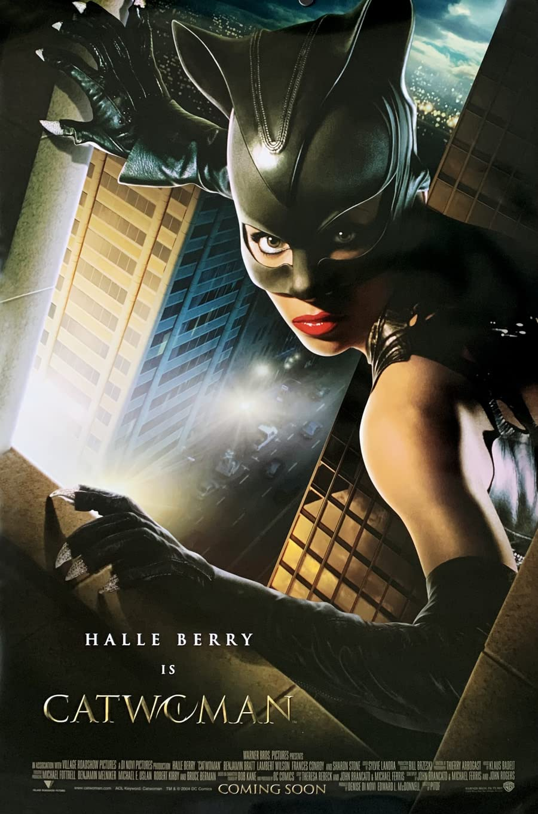
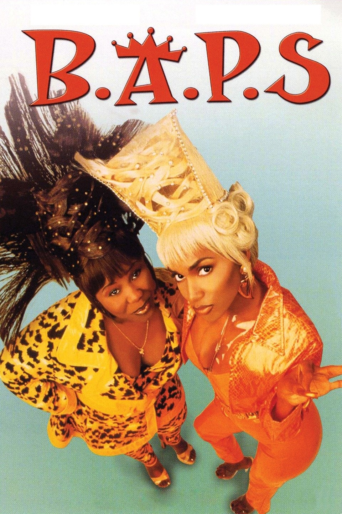

HOME
Catwoman
A shy woman, endowed with the speed, reflexes, and senses of a cat, walks a thin line between criminal and hero, even as a detective pursues her, fascinated by both of her personas. She discovers a conspiracy within the cosmetics company she works for that involves a dangerous product that could cause widespread health problems. After being discovered and murdered by the conspirators, She is revived by an Egyptian mau cat that grants her cat-like metahuman abilities, allowing her to become the crime-fighting superheroine Catwoman.

Company Credits: Warner Bros. Pictures
Release Date: July 23, 2004
Genres: Superhero, Action, Crime, Fantasy
Rating: PG-13
Running Time: 104 mins
B.A.P.S
Waitresses at a Georgia restaurant, Nisi and Mickey, decide to fly to Los Angeles for a music-video audition in order to raise money for their dream project, a business that combines soul-food dining with a hair salon. Circumstances eventually find the Southern ladies on the estate of Mr. Blakemore, an elderly millionaire. Despite their vast cultural differences, Nisi and Mickey form close bonds with Blakemore and his butler.

Company Credits: New Line Cinema
Release Date: March 28, 1997
Genres: Satire, Comedy
Rating: PG-13
Running Time: 92 mins